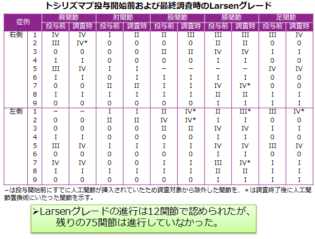
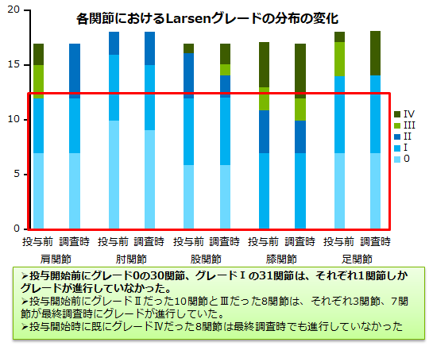

トシリズマブによる大関節の関節破壊効果
目的：トシリズマブ単剤による治療を行ったRA患者における大関節に対する効果を検討する
対象：MTXを含むDMARDs効果不十分例で、少なくとも3年以上TCZを投与し、投与前および最終調査時の肩、肘、股、膝、足関節のX線画像が入手可能であった9例、87関節
平均年齢51.7歳（32~69歳）平均罹病期間7年（2-13年）
評価方法：X線評価方法Larsenグレード、傍関節性骨のう胞、骨びらん、関節裂隙狭小化、軟骨下骨硬化、骨棘形成の有無や程度、荷重関節である股、膝、足関節と非荷重関節である肩、肘関節とに分けても比較

